5530A10 alternator - r+r
- Path
- Procedures > 55 ELECTRICAL EQUIPMENT > 5530 CURRENT GENERATOR > 5530A alternator and components > 5530A10 alternator - r+r
- Kind
- repair procedure (removal / refitting; the operation number is the code)
- Applies to
- all engines; all production periods
- Interactive page
- https://sloeber94.github.io/elrnDB-a156/en/#/3238422
Applies to: all engines; all production periods
Applies to: engines: 2.0 JTS, 2.0 JTS; all production periods
 Removing
Removing
 Refitting
RefittingPosition the vehicle on the ramp
Ensure that the ignition key is in the OFF position, then disconnect the negative battery terminal (-).
 | Name | Connector |
|---|---|---|
- | Battery |
Proceed with removal 1016A40 ignition coil cover on cylinder head- r+r .
Proceed with removal 7055B54 under-engine guard - r r .
Proceed with removal 1076B18 rigid section of exhaust pipe between catalytic converter and silencer - r + r .
Proceed with removal 5520B10 starter motor - r+r .
Proceed with removal 5530B10 battery - r+r .
Proceed with removal 5530B52 Battery DRIP TRAY/SUPPORT - R.R. .
1. Loosen the band and disconnect the oil vapour recirculation pipe from the cam cover.
2. Loosen the band and disconnect the vacuum pipe from the corrugated sleeve.
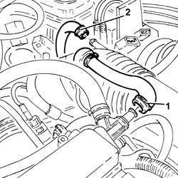
Applies to: engines: 2.0 JTS, 2.0 JTS; all production periods
1. Loosen the bands (1a) and remove the rigid pipe (1b) with corrugated air intake sleeve (1c) from the air filter to the throttle body.
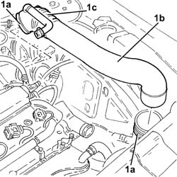
Applies to: engines: 2.0 JTS, 2.0 JTS; all production periods
1. Disconnect the gear selector and engagement cables
2. Remove the safety plates and release the gear selector and engagement cables from the mounting bracket.
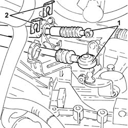
Applies to: engines: 2.0 JTS, 2.0 JTS; all production periods
1. Undo the fastenings and remove the gear selector and engagement cable mounting bracket.
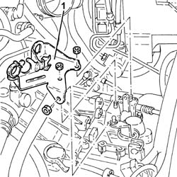
Applies to: engines: 2.0 JTS, 2.0 JTS; all production periods
1. Disconnect the electrical connection from the fuel vapour solenoid valve.
| Name | Connector |
|---|---|---|
1 | Fuel vapour recovery solenoid |
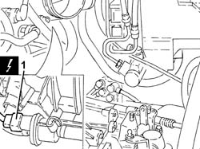
Applies to: engines: 2.0 JTS, 2.0 JTS; all production periods
1. Disconnect the electrical connections (1a) and (1b) for the engine wiring and move it to the side.
| Name | Connector |
|---|---|---|
1a | Front/engine connection |
| Name | Connector |
|---|---|---|
1b | Front/engine connection |
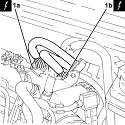
Applies to: engines: 2.0 JTS, 2.0 JTS; all production periods
Proceed with removal 4450B04 right front wheel r r .
1. Undo the bolts (1a), nut (1b) and remove the engine components single drive belt protection (1c).
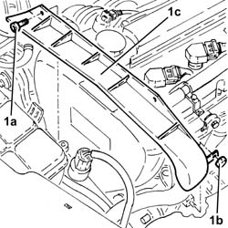
Applies to: engines: 2.0 JTS, 2.0 JTS; all production periods
1. Remove the buttons (1a), undo the attachments (1b) and remove the right front wheel arch protection (1c).
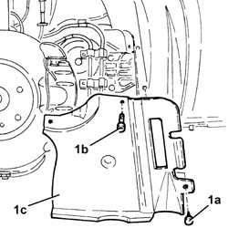
Applies to: engines: 2.0 JTS, 2.0 JTS; all production periods
1. Undo the nut (1a) and remove the brackets (1b) securing the power steering pipes.
2. Use a spanner on the moving tensioner (2a) and remove the single drive belt (2b).
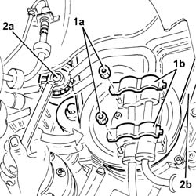
Applies to: engines: 2.0 JTS, 2.0 JTS; all production periods
1. Undo the bolt (1a) and remove the single drive belt tensioner (1b).
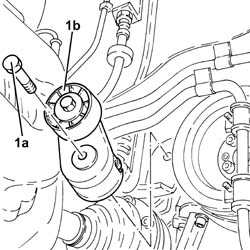
Applies to: engines: 2.0 JTS, 2.0 JTS; all production periods
1. Disconnect the electrical connections from the alternator.
| Name | Connector |
|---|---|---|
1 | Alternator |
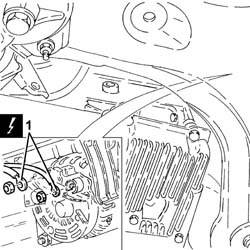
Applies to: engines: 2.0 JTS, 2.0 JTS; all production periods
1. Undo the bolts fixing the rear alternator mounting bracket.
2. Undo the alternator fixing bolts.
3. Keep the rear alternator mounting bracket.
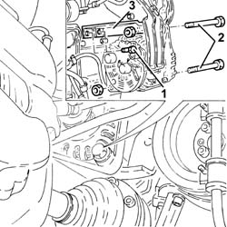
Applies to: engines: 2.0 JTS, 2.0 JTS; all production periods
1. Remove the alternator
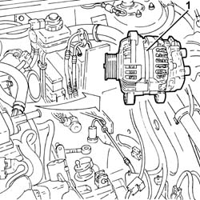
Applies to: engines: 2.0 JTS, 2.0 JTS; all production periods
Refitting
RemovingPlace the alternator and the rear mounting bracket in their housing.
Screw in the alternator fixing bolts without tightening them.
Tighten the bolts fixing the rear alternator mounting bracket.
Tighten the bolts fixing the alternator to the recommended torque.
 | Fastening | Component | Ø | Value (daNm) |
|---|---|---|---|---|
- | Bolt | ALTERNATOR ASSEMBLY | M10 | 4.5 ÷ 5.5 |
| Fastening | Component | Ø | Value (daNm) |
|---|---|---|---|---|
- | Bolt | ALTERNATOR ASSEMBLY | M12 | 6.3 ÷ 7.7 |
Connect the electrical connections to the alternator.
1. Place the engine components single drive belt moving tensioner (1a) back in its housing and fix it tightening the bolts (1b) to the recommended torque.
| Fastening | Component | Ø | Value (daNm) |
|---|---|---|---|---|
1b | Bolt | SINGLE SERVICES MOBILE BELT TENSIONER | M8 | 2.3 ÷ 2.8 |
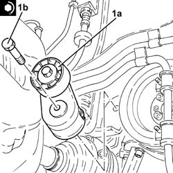
Applies to: engines: 2.0 JTS, 2.0 JTS; all production periods
Use a spanner in an anti-clockwise direction on the moving tensioner and fit the engine components single drive belt.
Fit the brackets securing the power steering pipes in their seatings and secure them with their nuts.
Place the right front wheel housing dust protection back in its housing and secure it using the fastenings and buttons.
Refit the engine components single drive belt protection in its seating and secure with its nut and bolts.
Proceed with refitting 4450B04 right front wheel r r .
Place the electrical wiring back in its housing and connect the electrical connections for the engine wiring.
Connect the electrical connection to the fuel vapour solenoid valve.
Place the gear selector and engagement cables mounting bracket back in its housing and secure it.
Place the gear selector and engagement cables back in their housings and secure them using the safety plates.
Place the rigid air supply pipe with corrugated air intake sleeve from the filter to the throttle body back in its housing and secure it using the bands.
Connect the vacuum pipe to the corrugated hose and tighten the band.
Connect the oil vapour recirculation pipe to the tappet cover and secure with a band.
Proceed with refitting 5530B52 Battery DRIP TRAY/SUPPORT - R.R. .
Proceed with refitting 5530B10 battery - r+r .
Proceed with refitting 5520B10 starter motor - r+r .
Proceed with refitting 1076B18 rigid section of exhaust pipe between catalytic converter and silencer - r + r .
Proceed with refitting 7055B54 under-engine guard - r r .
Proceed with refitting 1016A40 ignition coil cover on cylinder head- r+r .
Connect the negative (-) battery terminal
Remove the car from the ramps.
Applies to: engines: 1.9 JTD 16v; all production periods
Removing
RefittingPosition the vehicle on the ramp
Ensure that the ignition key is in the OFF position, then disconnect the negative battery terminal (-).
| Name | Connector |
|---|---|---|
- | Battery |
Proceed with removal 1016A10 sound-proofing cover - r + r .
Proceed with removal 4450B04 right front wheel r r .
Proceed with removal 7055B54 under-engine guard - r r .
Proceed with removal - 7055B91 Right front WHEEL ARCH LINER - R.R. .
Proceed with removal 1092G10 single engine belt r r .
Proceed with removal 1044B10 fuel filter assembly - r + r or replace .
Proceed with removal 1080D34 engine oil vapour separator - r + r .
Proceed with removal 1084A16 oil dip stick pipe - r r .
1. Disconnect the electrical connections from the alternator.
| Name | Connector |
|---|---|---|
1 | Alternator |
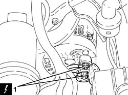
Applies to: engines: 1.9 JTD 16v; all production periods
1. Undo the bolts (1a) and remove the power assisted steering pulley protection (1b).
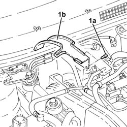
Applies to: engines: 1.9 JTD 16v; all production periods
1. Undo the upper alternator fixing bolt.
2. Undo the bolts (2a) and remove the rear alternator bracket (2b).
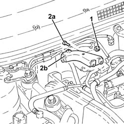
Applies to: engines: 1.9 JTD 16v; all production periods
1. Undo the lower alternator fixing bolt.
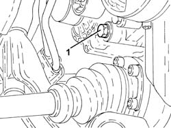
Applies to: engines: 1.9 JTD 16v; all production periods
1. Remove the alternator
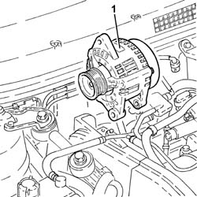
Applies to: engines: 1.9 JTD 16v; all production periods
Refitting
RemovingRefit the alternator in its seating and secure it temporarily with the bottom bolt.
Place the alternator rear mounting bracket back in its housing and secure it using the bolts.
Tighten the two bolts fixing the alternator to the recommended torque.
| Fastening | Component | Ø | Value (daNm) |
|---|---|---|---|---|
- | Bolt | ALTERNATOR ASSEMBLY | M10 | 4.5 ÷ 5.5 |
| Fastening | Component | Ø | Value (daNm) |
|---|---|---|---|---|
- | Bolt | ALTERNATOR ASSEMBLY | M12 | 6.3 ÷ 7.7 |
Place the power assisted steering pump pulley protection back in its housing and secure it using the bolts.
Connect the electrical connections to the alternator.
Proceed with refitting 1084A16 oil dip stick pipe - r r .
Proceed with refitting 1080D34 engine oil vapour separator - r + r .
Proceed with refitting 1044B10 fuel filter assembly - r + r or replace .
Proceed with refitting 1092G10 single engine belt r r .
Proceed with refitting - 7055B91 Right front WHEEL ARCH LINER - R.R. .
Proceed with refitting 7055B54 under-engine guard - r r .
Proceed with refitting 4450B04 right front wheel r r .
Proceed with refitting 1016A10 sound-proofing cover - r + r .
Connect the negative (-) battery terminal
Remove the car from the ramps.
Applies to: engines: 2.4 JTD 20v; all production periods
Removing
RefittingPosition the vehicle on the ramp
Ensure that the ignition key is in the OFF position, then disconnect the negative battery terminal (-).
| Name | Connector |
|---|---|---|
- | Battery |
Proceed with removal 4450B04 right front wheel r r .
Proceed with removal 7055B54 under-engine guard - r r .
Proceed with removal - 7055B91 Right front WHEEL ARCH LINER - R.R. .
Proceed with removal - 7055B66 Engine compartment DUST SHIELD protection in right front wheel arch - R.R. .
Proceed with removal 1092G10 single engine belt r r .
1. Undo the lower alternator fixing bolt.
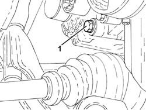
Applies to: engines: 2.4 JTD 20v; all production periods
Proceed with removal 1076B70 exhaust pipe between pre-catalytic converter and catalytic converter - r r .
1. Position a hydraulic jack under the gearbox
2. Undo the bolt fixing the rear power unit rigid support to the flexible mounting.
Lower the hydraulic jack as necessary.
3. Open the protective cover, undo the nuts (3a) and disconnect the electrical connections (3b) from the alternator.
| Name | Connector |
|---|---|---|
3b | Alternator |
4. Undo the upper alternator fixing bolt.
5. Remove the alternator
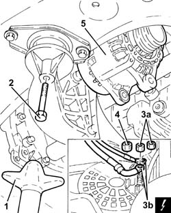
Applies to: engines: 2.4 JTD 20v; all production periods
Refitting
RemovingPlace the alternator back in its housing and secure it tightening the bolts to the recommended torque.
| Fastening | Component | Ø | Value (daNm) |
|---|---|---|---|---|
- | - | - | - | - |
Connect the electrical connections to the alternator, secure them using the nuts and close the protective cover.
Tighten the bolt securing the rigid rear power unit support to the flexible mounting to the recommended torque.
| Fastening | Component | Ø | Value (daNm) |
|---|---|---|---|---|
- | - | - | - | - |
Remove the hydraulic jack from under the gearbox.
Proceed with refitting 1076B70 exhaust pipe between pre-catalytic converter and catalytic converter - r r .
Proceed with refitting 1092G10 single engine belt r r .
Proceed with refitting - 7055B66 Engine compartment DUST SHIELD protection in right front wheel arch - R.R. .
Proceed with refitting - 7055B91 Right front WHEEL ARCH LINER - R.R. .
Proceed with refitting 7055B54 under-engine guard - r r .
Proceed with refitting 4450B04 right front wheel r r .
Connect the negative (-) battery terminal
Remove the car from the ramps.
Topics linked from this page (19)
- 1016A10 sound-proofing cover - r + r
- 1016A40 ignition coil cover on cylinder head- r+r
- 1044B10 fuel filter assembly - r + r or replace
- 1076B18 rigid section of exhaust pipe between catalytic converter and silencer - r + r
- 1076B70 exhaust pipe between pre-catalytic converter and catalytic converter - r r
- 1080D34 engine oil vapour separator - r + r
- 1084A16 oil dip stick pipe - r r
- 1092G10 single engine belt r r
- 4450B04 right front wheel r r
- 5520B10 starter motor - r+r
- 5530A14 alternator - r+r for versions with air conditioner
- 5530B10 battery - r+r
- 5530B52 Battery DRIP TRAY/SUPPORT - R.R.
- 7055B54 under-engine guard - r r
- A1B Battery ( BATTERY NEGATIVE )
- A10 Alternator
- D4A Front/engine connection ( ENGINE )
- D4B Front/engine connection ( ENGINE )
- L10 Fuel vapour recovery solenoid